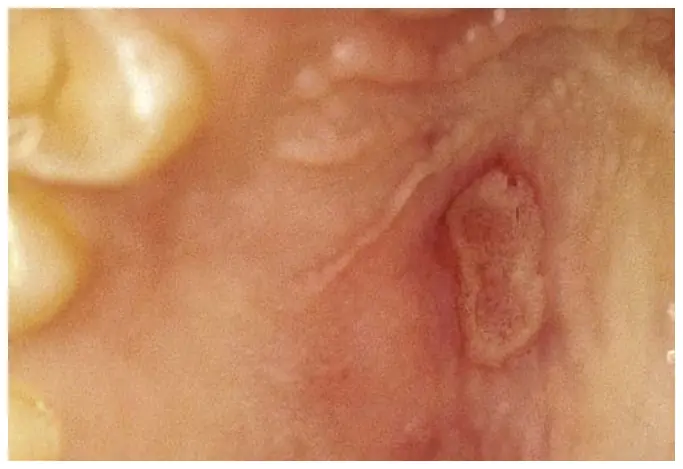

نسخه استخراجشده؛ ترجمه یا تأیید علمی انجام نشده است. وضعیت: captured
در مطب فقط مپیواکائین ۲٪ با لوونوردفرین ۱:۲۰٬۰۰۰ مانده است. بیمار بعدی خانمی ۵۰ ساله است که برای افسردگی آمیتریپتیلین میخورد و دو ترمیم فک پایین دارد. این کارپول را برایش برمیداری؟

لوونوردفرین تنگکنندهی مصنوعی است. بیشتر روی گیرندهی آلفا (حدود ۷۵٪) و کمتر روی بتا (حدود ۲۵٪) اثر میکند و قدرتش حدود یکششم (۱۵٪) اپینفرین است؛ برای همین با غلظت بالاتر، ۱:۲۰٬۰۰۰، همراه مپیواکائین ۲٪ عرضه میشود.
نوراپینفرین حدود ۹۰٪ روی آلفا و ۱۰٪ روی بتا ۱ اثر میکند و قدرتش یکچهارم اپینفرین است. رگها را شدید تنگ میکند، فشار سیستولی و دیاستولی را بالا میبرد و ضربان را بهطور رفلکسی کند میکند. عوارضش حدود ۹ برابر اپینفرین است و تزریقش در کام به ایسکمی طولانی و نکروز بافت رسیده است. نوراپینفرین، و مخلوطش با اپینفرین، برای بیحسی دندانپزشکی توصیه نمیشود.
فلیپرسین آنالوگ مصنوعی وازوپرسین (هورمون ضدادرار) است، نه یک داروی سمپاتومیمتیک. مستقیم روی عضلهی صاف رگ اثر میکند، بیشتر روی سیاهرگهای کوچک تا سرخرگها. با غلظت ۰٫۰۳ واحد بینالمللی در هر میلیلیتر همراه پریلوکائین ۳٪ عرضه میشود.
اشتباه رایج: فلیپرسین را برای کنترل خونریزی بزنی. چون بیشتر سیاهرگها را تنگ میکند، هموستاز خوبی نمیدهد و ممکن است خونریزی محل جراحی را بیشتر کند. اثر اکسیتوسیک هم دارد؛ پس در بارداری توصیه نمیشود.
فنیلافرین تقریباً خالص روی آلفا اثر میکند و قدرتش یکبیستم اپینفرین است. امروز در کارپول دندانپزشکی نیست، ولی یک نکتهی مهم دارد: برخلاف اپینفرین و لوونوردفرین، همراه MAOI بحران فشار خون داده است.